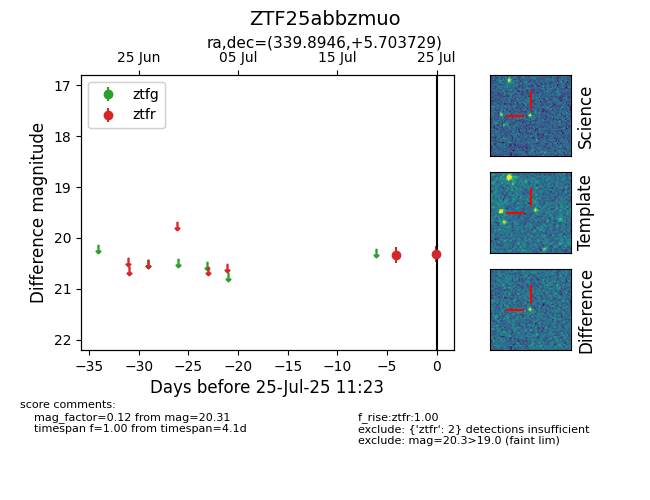

Target ZTF25abbzmuo at 2025-07-25 11:23, see:
FINK: fink-portal.org/ZTF25abbzmuo
Lasair: lasair-ztf.lsst.ac.uk/objects/ZTF25abbzmuo
ALeRCE: alerce.online/object/ZTF25abbzmuo
alt names
ZTF25abbzmuo (ztf,fink)
coordinates:
equatorial (ra, dec) = (339.8946,+5.70373)
galactic (l, b) = (73.8396,-44.24190)
photometry
last ztfr=20.31
2 ztfr detections
